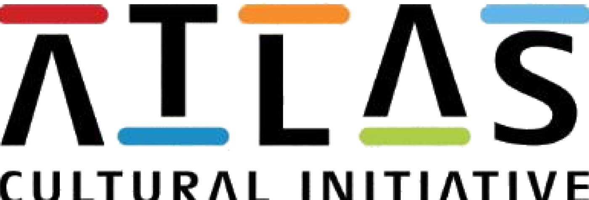

03
Logo Variations
One primary lockup, four ways to run it. Each variation keeps the same proportions and letterforms; only the color treatment changes to fit the surface it sits on.

Primary / Full Color
The default lockup. Use on white or light neutral backgrounds wherever full color reproduction is available.
Reversed / White
For dark backgrounds, photography, and the hero and closing sections of this guide.
Monochrome / Black
One-color applications: engraving, embroidery, stamping, watermarks, and fax-quality documents.
Grayscale
Black and white print runs, and any material printed without CMYK or spot color.
Social Media Direction
Social is where the cultural storytelling lives day to day. Profiles carry the mark, and posts carry the color and pattern system.
Atlas Cultural Initiative
Profile photo: white logo on the dark brand ground, never the full horizontal lockup, it reads better cropped tight at avatar size. Cover images use the light pattern tile at low opacity behind a single strong photograph.
Cultural Spotlights
One tradition, artist, or landmark per post, told with specificity.
Behind the Scenes
How an exhibit, event, or collaboration comes together.
Community Voices
Local artists and partners speaking in their own words.
Events & Announcements
Clean, logo-forward graphics built on the color bar system.